Native cell expression groups
The full official Xenium Prime 5K ovarian cancer sample contains 407,124 cells and 5,101 Gene Expression features. Exactly 406,611 cells with positive gene counts were analyzed; 513 zero-gene cells were excluded and remain in the stored native matrix. KODAMA used gene expression only. Coordinates are used to display groups, and provider pathology annotations did not enter clustering.
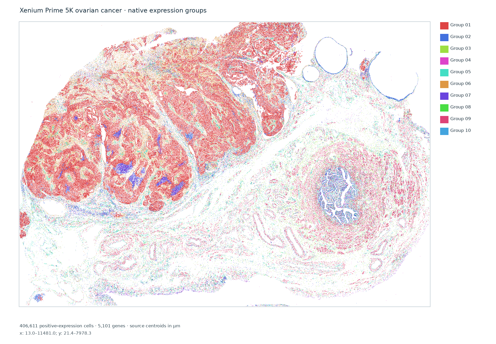
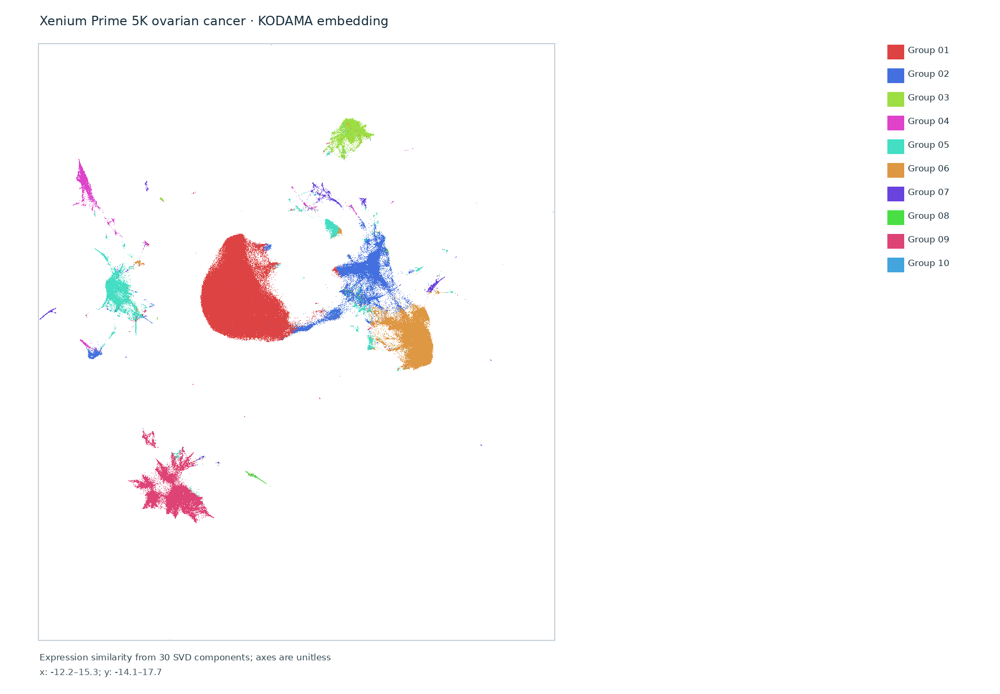
Interpretation: These groups are exploratory and anonymous. Their numbers do not identify cell types or pathology classes. The KODAMA analysis used the complete sample, with no cell subsampling. Groups 04, 08 and 10 have low median gene counts (14, 19 and 2), and group 10 has only 62 cells; these groups may reflect technical variation. No H&E Virchow2 features, Bora image refinement or class GeoJSON are claimed.
Inspect each expression group
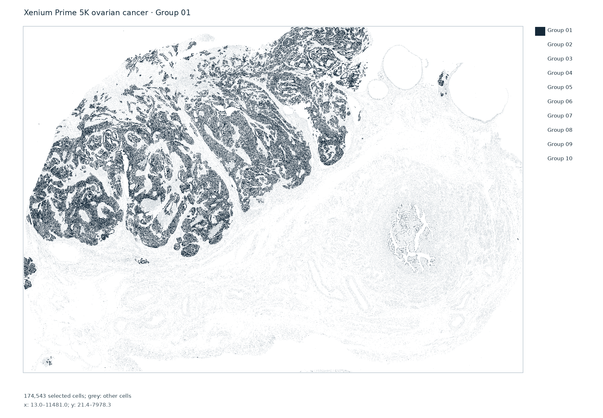
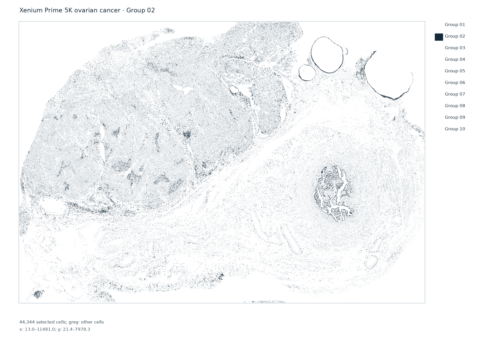
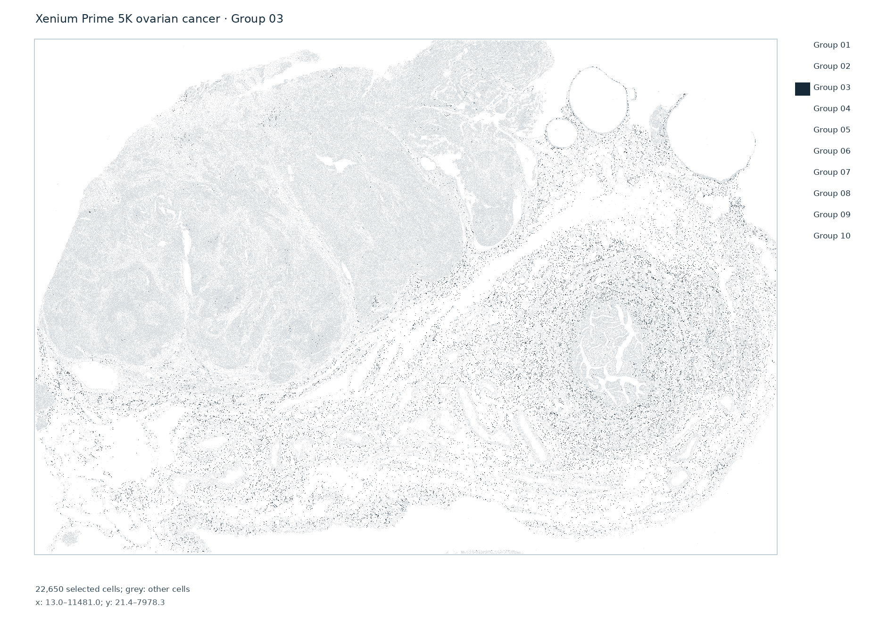
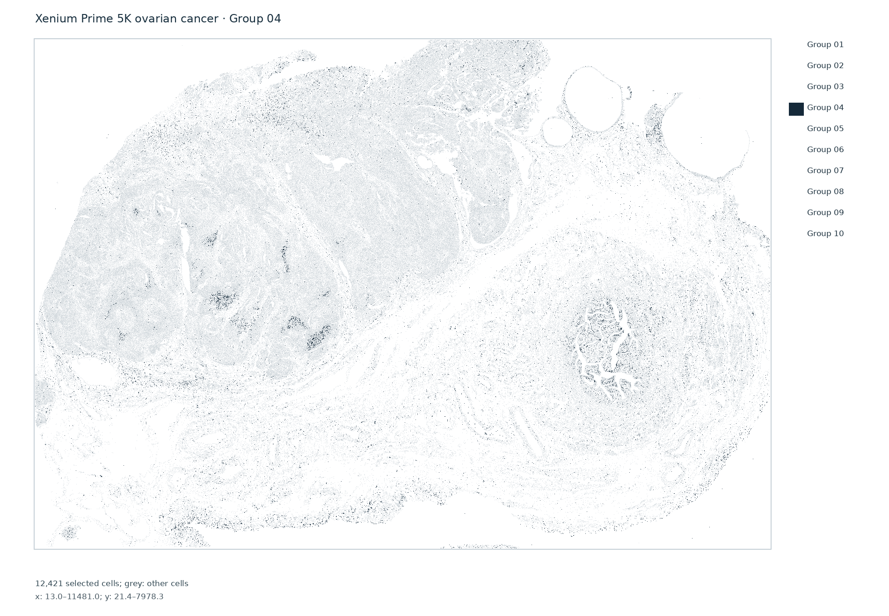
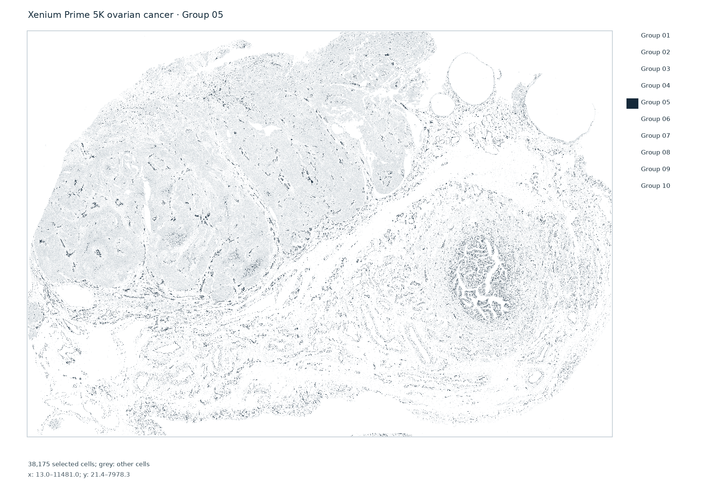
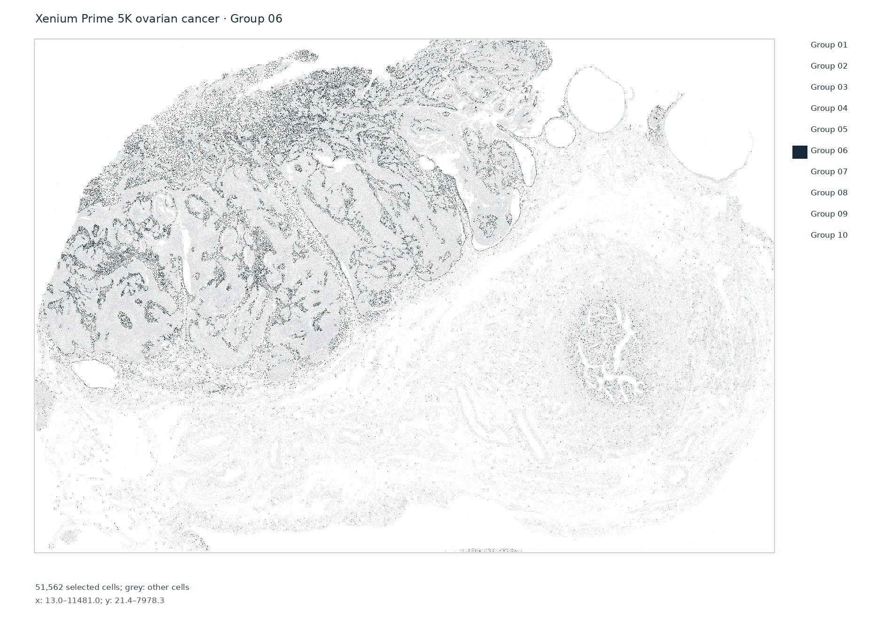
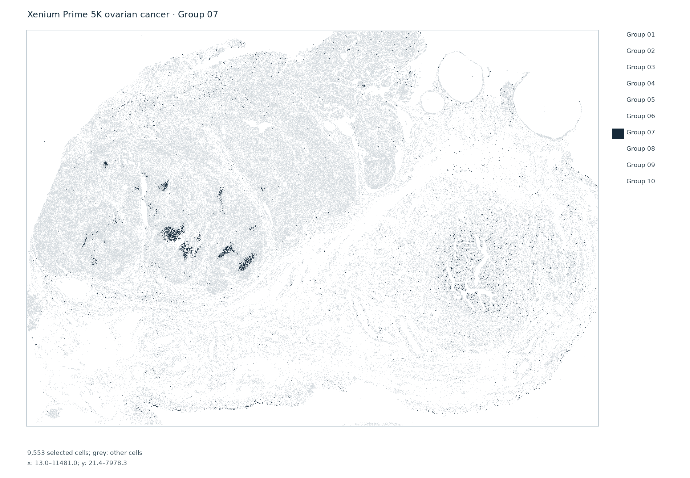
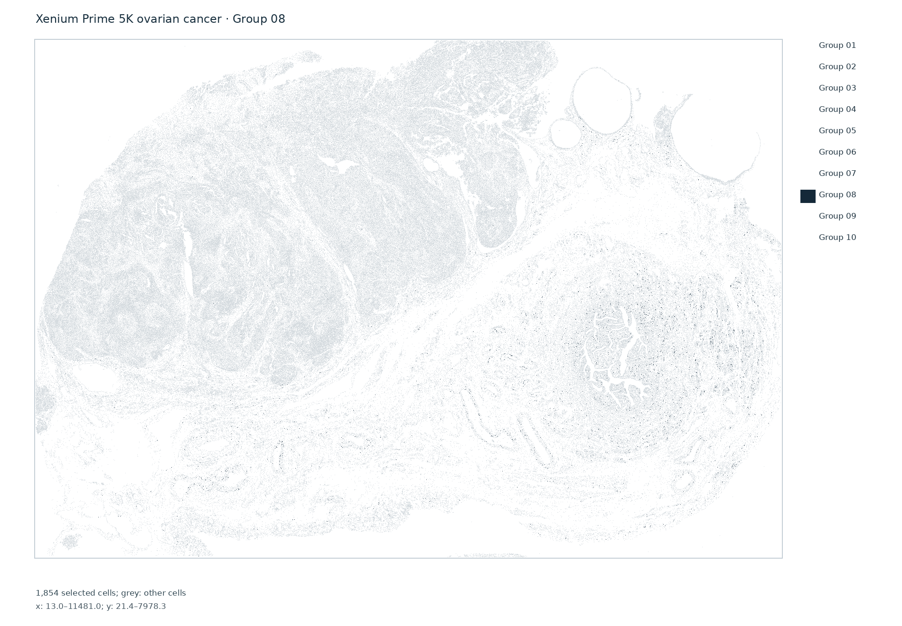
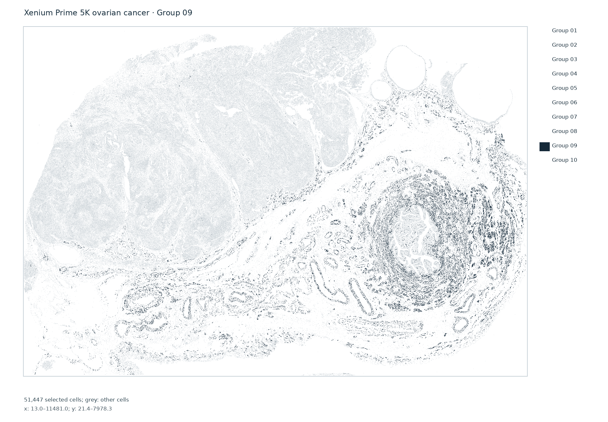
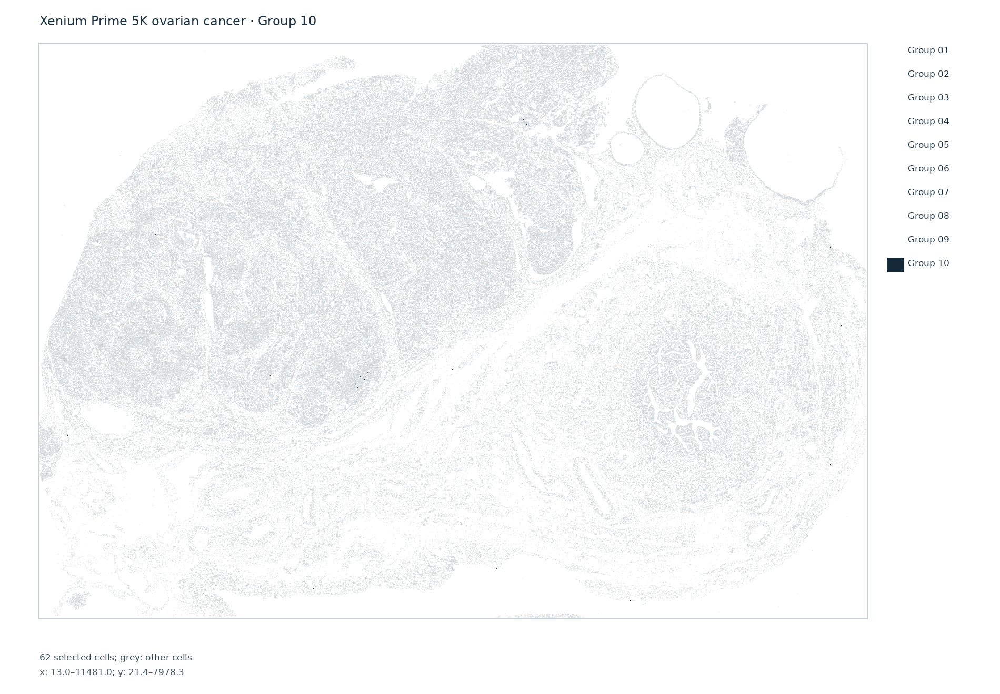
Download and provenance
Download cell coordinates and expression groups (gzip CSV)
Verified analysis provenance · Official 10x dataset
Computed locally with pinned R 4.6/KODAMA 0.99.7 using 30 expression-only truncated SVD components and a 15-neighbor Leiden graph at resolution 0.25. The official full matrix, native cell coordinates, source metadata, reusable expression inputs and complete KODAMA fit are retained locally.